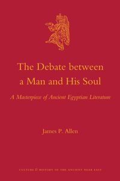

28:25 · 7 OPERE
The Bluebird Project: duality between East and West.
Il filo del discorso
L’intervento in inglese del Bluebird Project esplora il rapporto fra unità e dualità attraverso filosofia, religione, linguaggio e immagini. Dr Divago propone un confronto fra alcune tradizioni asiatiche di non dualità e la tendenza occidentale a dividere l’esperienza in opposizioni. Parmenide e il rapporto critico di Platone con il suo pensiero introducono il problema; il libro di Giobbe e la figura dell’avversario conducono alla discussione religiosa del bene e del male.
Leggi la sintesi completaRiduci la sintesi
Il percorso passa poi dalle strutture rituali di Göbekli Tepe alla torre di Babele e alla grammatica greca. Con Stevenson, Omero e il dialogo egizio di un uomo con il proprio ba, la divisione diventa una questione dell’identità e del rapporto con sé. Nella parte finale il relatore interpreta forme scultoree circolari, il centro e la tavola rotonda come immagini dell’unità e dell’equità. La conclusione insiste sull’unicità di ogni prospettiva individuale. I collegamenti simbolici costituiscono la sua proposta interpretativa; alcune etimologie e generalizzazioni storiche richiedono le precisazioni raccolte nelle note.
I libri nel discorso

Sofista
Identificazione probabile
Note sul riferimento
Copertina: Einaudi · Piccola Biblioteca Einaudi Nuova serie 402, 2008 · cura e traduzione Bruno Centrone
Immagine autentica dell’opera, controllata visivamente; l’edizione di riferimento non è attribuita al filmato.
Platone e il parricidio del padre Parmenide: rimando riconoscibile a Sofista 241d–242a, titolo del dialogo non pronunciato.

Giobbe
Note sul riferimento
Copertina del volume completo: San Paolo, 2014 · Nuova Versione dai Testi Antichi · edizione di riferimento
Giobbe è un libro della Bibbia. L’immagine mostra il volume completo San Paolo di riferimento, non un’edizione autonoma del singolo libro e non una versione identificata nella citazione.
Job, Giobbe, e il confronto fra Dio e l’avversario esplicitamente richiamati.
Bibbia
Note sul riferimento
Copertina: San Paolo, 2014 · Nuova Versione dai Testi Antichi · edizione di riferimento
Richiamo esplicito alla torre di Babele; episodio localizzabile in Genesi 11, senza attribuire un’edizione al relatore.
Vangelo secondo Matteo
Identificazione probabile
Note sul riferimento
Copertina del volume completo: San Paolo, 2014 · Nuova Versione dai Testi Antichi · edizione di riferimento
Vangelo secondo Matteo è un libro della Bibbia. L’immagine mostra il volume completo San Paolo di riferimento, non un’edizione autonoma del singolo libro e non una versione identificata nella citazione.
Padre nostro e formula dei cieli discussi in greco; rimando a Matteo 6,9 probabile perché il Vangelo non viene nominato.

Lo strano caso del dottor Jekyll e del signor Hyde
Note sul riferimento
Copertina: BUR / Rizzoli · 2021
Immagine autentica dell’opera, controllata visivamente; l’edizione di riferimento non è attribuita al filmato.
Stevenson e Dr Jekyll e Mr Hyde esplicitamente richiamati.

Dialogo di un uomo con il suo ba
Note sul riferimento
Edizione critica con traduzione: James P. Allen, The Debate Between a Man and His Soul: A Masterpiece of Ancient Egyptian Literature, Brill, Culture and History of the Ancient Near East 44, copyright 2011; ebook pubblicato il 20 dicembre 2010.
Copertina autentica dell’edizione critica inglese di James P. Allen, che contiene lettura, traduzione e studio dell’antico dialogo. ISBN dell’ebook 9789004193062: non attribuito al papiro antico. Non è una fotografia del papiro né un’edizione identificata nel video.
Descritto il papiro egizio con il dialogo di un uomo e del proprio ba; identificato come Berlino P. 3024.

Odissea
Note sul riferimento
Copertina: Einaudi · ET Classici · 2014
Copertina autentica controllata visivamente. Edizione di riferimento, non identificata come quella usata nel video.
Odyssey esplicitamente nominata nel confronto con la rappresentazione egizia del rapporto con sé.